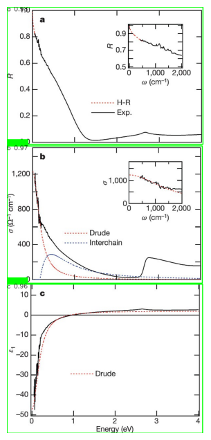
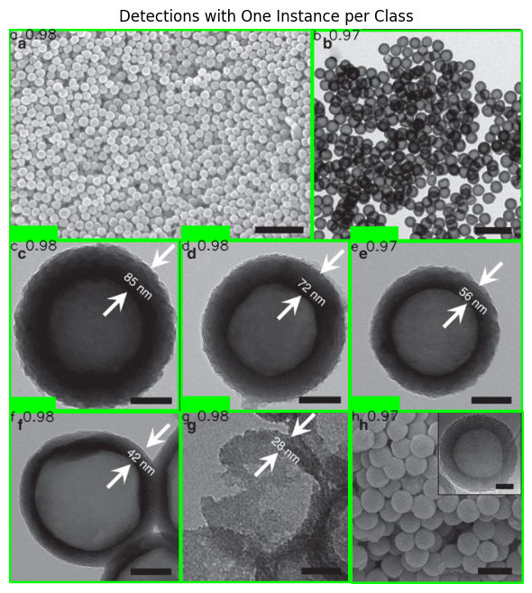

4. Finetuning YOLOv11 on compound separation
Install the dependencies !pip install ultralytics wandb weave opencv-python requests pillow
[ ]:
import json
import os
import requests
import random
from PIL import Image
from sklearn.model_selection import train_test_split
import cv2
import matplotlib.pyplot as plt
# create a data.yaml file with the following structure:
train: /content/dataset/images/train
val: /content/dataset/images/val
nc: 8
names: ['a', 'b', 'c', 'd', 'e', 'f', 'g', 'h', 'i']
[ ]:
# This the json file with the labelled images from MLTurk described in the paper: https://arxiv.org/abs/2101.09903
json_file_path = "/content/export-2024-07-11T05_19_22.318Z.json"
with open(json_file_path, 'r') as f:
data = json.load(f)
[ ]:
def polygon_to_bbox(polygon):
x_coords = [point['x'] for point in polygon]
y_coords = [point['y'] for point in polygon]
x_min, x_max = min(x_coords), max(x_coords)
y_min, y_max = min(y_coords), max(y_coords)
x_center = (x_min + x_max) / 2
y_center = (y_min + y_max) / 2
width = x_max - x_min
height = y_max - y_min
return x_center, y_center, width, height
def is_point_in_polygon(point, polygon):
x, y = point
inside = False
n = len(polygon)
p1x, p1y = polygon[0]['x'], polygon[0]['y']
for i in range(n + 1):
p2x, p2y = polygon[i % n]['x'], polygon[i % n]['y']
if y > min(p1y, p2y):
if y <= max(p1y, p2y):
if x <= max(p1x, p2x):
if p1y != p2y:
xinters = (y - p1y) * (p2x - p1x) / (p2y - p1y) + p1x
if p1x == p2x or x <= xinters:
inside = not inside
p1x, p1y = p2x, p2y
return inside
# Function to create class ID mapping with priority for specific labels
def create_class_id_mapping(subfigure_labels, priority_labels):
standard_labels = {
'a': 0, 'A': 0, 'a.': 0, 'A.': 0,
'b': 1, 'B': 1, 'b.': 1, 'B.': 1,
'c': 2, 'C': 2, 'c.': 2, 'C.': 2, " c":2,
'd': 3, 'D': 3, 'd.': 3, 'D.': 3,
'e': 4, 'E': 4, 'e.': 4, 'E.': 4,
'f': 5, 'F': 5, 'f.': 5, 'F.': 5,
'g': 6, 'G': 6, 'g.': 6, 'G.': 6,
'h': 7, 'H': 7, 'h.': 7, 'H.': 7,
'(a)': 0, '(A)': 0, '(a)': 0, '(A)': 0,
'(b)': 1, '(B)': 1, '(b)': 1, '(B)': 1,
'(c)': 2, '(C)': 2, '(c)': 2, '(C)': 2,
'(d)': 3, '(D)': 3, '(d)': 3, '(D)': 3,
'(e)': 4, '(E)': 4, '(e)': 4, '(E)': 4,
'(f)': 5, '(F)': 5, '(f)': 5, '(F)': 5,
'(g)': 6, '(G)': 6, '(g)': 6, '(G)': 6,
'(h)': 7, '(H)': 7, '(h)': 7, '(H)': 7,
'a)': 0, 'A)': 0, 'b)': 1, 'B)': 1,
'c)': 2, 'C)': 2, 'd)': 3, 'D)': 3,
'e)': 4, 'E)': 4, 'f)': 5, 'F)': 5,
'g)': 6, 'G)': 6, 'h)': 7, 'H)': 7
}
class_id_mapping = {}
current_id = 0
for label in priority_labels:
if label in subfigure_labels and label not in class_id_mapping:
class_id_mapping[label] = standard_labels[label]
current_id += 1
return class_id_mapping
# Extract all unique subfigure labels
subfigure_labels = set()
for entry in data:
for subfigure in entry['Label'].get('Subfigure Label', []):
subfigure_labels.add(subfigure['text'].strip('()'))
priority_labels = ['a', 'b', 'c', 'd', 'e', 'f', 'g', 'h']
class_id_mapping = create_class_id_mapping(subfigure_labels, priority_labels)
print("Class ID Mapping:", class_id_mapping)
# Split data into train and test sets
train_data, test_data = train_test_split(data, test_size=1164, random_state=42)
for split in ['train', 'val']:
os.makedirs(f'dataset/images/{split}', exist_ok=True)
os.makedirs(f'dataset/labels/{split}', exist_ok=True)
def process_data_split(data_split, split_name):
for entry in data_split:
image_url = entry['Labeled Data']
image_id = entry['External ID'].split('.')[0]
image_path = f'dataset/images/{split_name}/{image_id}.png'
response = requests.get(image_url)
with open(image_path, 'wb') as img_file:
img_file.write(response.content)
image = Image.open(image_path)
img_width, img_height = image.size
label_file_path = f'dataset/labels/{split_name}/{image_id}.txt'
with open(label_file_path, 'w') as label_file:
for annotation in entry['Label'].get('Master Image', []):
bbox = polygon_to_bbox(annotation['geometry'])
x_center, y_center, width, height = bbox
x_center /= img_width
y_center /= img_height
width /= img_width
height /= img_height
# Find corresponding subfigure label
for sub in entry['Label'].get('Subfigure Label', []):
if len(sub['geometry']) >= 4:
label_center = (
(sub['geometry'][0]['x'] + sub['geometry'][2]['x']) / 2,
(sub['geometry'][0]['y'] + sub['geometry'][2]['y']) / 2
)
if is_point_in_polygon(label_center, annotation['geometry']):
subfigure_label = sub['text'].strip('()')
class_id = class_id_mapping.get(subfigure_label)
if class_id is not None:
label_file.write(f'{class_id} {x_center} {y_center} {width} {height}\n')
print(f'Processed {image_id}: Class ID: {class_id}, BBox: {x_center}, {y_center}, {width}, {height}')
break
# Process the data splits
process_data_split(train_data, 'train')
process_data_split(test_data, 'val')
# Save class ID mapping to a file
with open('dataset/labels/class_id_mapping.txt', 'w') as mapping_file:
for label, class_id in class_id_mapping.items():
mapping_file.write(f'{label}: {class_id}\n')
print('Conversion complete!')
[ ]:
# correcting formatting issues with images
from PIL import Image
import glob
image_paths = glob.glob('/content/dataset/images/train/*.png')
for image_path in image_paths:
with Image.open(image_path) as img:
if img.format == 'GIF':
img.save(image_path, format='PNG')
image_paths = glob.glob('/content/dataset/images/val/*.png')
for image_path in image_paths:
with Image.open(image_path) as img:
if img.format == 'GIF':
img.save(image_path, format='PNG')
[ ]:
from ultralytics import YOLO
import wandb
# Load a pretrained YOLOv11 model
model = YOLO("yolo11x.pt")
model_path = "yolov11x_finetunedv2.pt"
results = model.train(
data="./data.yaml",
epochs=150,
imgsz=608,
project="yolo11x_training", # wandb project name
name="yolov11x_finetune" # wandb run name
)
# Save the fine-tuned model
model.save(model_path)
wandb.init("yolo11x_training")
wandb.log_model(model_path)
wandb.finish()
[ ]:
# Save the fine-tuned model
model.save(model_path)
wandb.init(project="yolo11x_training")
wandb: Currently logged in as: kvriza. Use `wandb login --relogin` to force relogin
Tracking run with wandb version 0.18.5
Run data is saved locally in
/content/wandb/run-20241030_220024-sl8jyq82
View project at https://wandb.ai/kvriza/yolo11x_training
Printing the test set results after finetuning YOLOv11x on compound separation
[ ]:
metrics = model.val(
data="./data.yaml",
batch=16,
imgsz=640,
conf=0.001,
iou=0.65,
save_json=True,
plots=True
)
Ultralytics 8.3.25 🚀 Python-3.10.12 torch-2.5.0+cu121 CUDA:0 (Tesla T4, 15102MiB)
YOLO11x summary (fused): 464 layers, 56,836,264 parameters, 0 gradients, 194.5 GFLOPs
val: Scanning /content/dataset/labels/val.cache... 952 images, 186 backgrounds, 14 corrupt: 100%|██████████| 952/952 [00:00<?, ?it/s]
val: WARNING ⚠️ /content/dataset/images/val/C0CE00988A_fig4.png: 1 duplicate labels removed
val: WARNING ⚠️ /content/dataset/images/val/ncomms10603_fig3.png: ignoring corrupt image/label: non-normalized or out of bounds coordinates [ 1.0015 1.0015 1.0015]
val: WARNING ⚠️ /content/dataset/images/val/ncomms10603_fig7.png: ignoring corrupt image/label: non-normalized or out of bounds coordinates [ 1.0015]
val: WARNING ⚠️ /content/dataset/images/val/ncomms4801_fig2.png: ignoring corrupt image/label: non-normalized or out of bounds coordinates [ 1.0015]
val: WARNING ⚠️ /content/dataset/images/val/ncomms9711_fig6.png: ignoring corrupt image/label: non-normalized or out of bounds coordinates [ 1.0015]
val: WARNING ⚠️ /content/dataset/images/val/nn203661n_fig4.png: ignoring corrupt image/label: non-normalized or out of bounds coordinates [ 1.0034]
val: WARNING ⚠️ /content/dataset/images/val/s41467-017-00332-x_fig3.png: ignoring corrupt image/label: non-normalized or out of bounds coordinates [ 1.0015]
val: WARNING ⚠️ /content/dataset/images/val/s41467-017-00332-x_fig5.png: ignoring corrupt image/label: non-normalized or out of bounds coordinates [ 1.0015]
val: WARNING ⚠️ /content/dataset/images/val/s41467-017-01134-x_fig3.png: ignoring corrupt image/label: non-normalized or out of bounds coordinates [ 1.0015]
val: WARNING ⚠️ /content/dataset/images/val/s41598-017-12506-0_fig5.png: ignoring corrupt image/label: non-normalized or out of bounds coordinates [ 1.0015 1.0015]
val: WARNING ⚠️ /content/dataset/images/val/s41598-017-15120-2_fig3.png: ignoring corrupt image/label: non-normalized or out of bounds coordinates [ 1.0015]
val: WARNING ⚠️ /content/dataset/images/val/s41598-018-36232-3_fig1.png: ignoring corrupt image/label: non-normalized or out of bounds coordinates [ 1.0015 1.0015]
val: WARNING ⚠️ /content/dataset/images/val/s41598-019-42998-x_fig5.png: ignoring corrupt image/label: non-normalized or out of bounds coordinates [ 1.0015]
val: WARNING ⚠️ /content/dataset/images/val/s41598-019-45734-7_fig2.png: ignoring corrupt image/label: non-normalized or out of bounds coordinates [ 1.0015]
val: WARNING ⚠️ /content/dataset/images/val/s41598-019-48271-5_fig3.png: ignoring corrupt image/label: non-normalized or out of bounds coordinates [ 1.0015 1.0015]
Class Images Instances Box(P R mAP50 mAP50-95): 100%|██████████| 59/59 [00:48<00:00, 1.23it/s]
all 938 3261 0.904 0.939 0.961 0.94
a 730 735 0.915 0.95 0.97 0.955
b 725 728 0.876 0.942 0.957 0.945
c 603 608 0.909 0.944 0.958 0.938
d 489 491 0.908 0.926 0.959 0.942
e 279 281 0.905 0.944 0.966 0.952
f 231 231 0.91 0.931 0.963 0.941
g 108 108 0.909 0.921 0.954 0.926
h 79 79 0.904 0.956 0.961 0.921
Speed: 0.2ms preprocess, 47.1ms inference, 0.0ms loss, 0.8ms postprocess per image
Saving yolo11x_training/yolov11x_finetune2/predictions.json...
Results saved to yolo11x_training/yolov11x_finetune2
[ ]:
# Run inference with adjusted NMS parameters
image_path = "nature04705_fig3.jpg"
results = model.predict(
source=image_path,
imgsz=640,
conf=0.25,
iou=0.45,
max_det=100,
agnostic_nms=False,
)
image 1/1 /content/nature04705_fig3.jpg: 640x320 1 a, 1 b, 1 c, 62.2ms
Speed: 2.1ms preprocess, 62.2ms inference, 1.5ms postprocess per image at shape (1, 3, 640, 320)
[ ]:
results = model.predict(
source=image_path,
imgsz=640,
conf=0.25,
iou=0.45,
max_det=100,
agnostic_nms=False,
)
for result in results:
detections_per_class = {}
for box in result.boxes:
cls_id = int(box.cls[0])
conf = box.conf[0]
if cls_id not in detections_per_class or conf > detections_per_class[cls_id].conf[0]:
detections_per_class[cls_id] = box
final_detections = list(detections_per_class.values())
image = cv2.imread(image_path)
if image is None:
print(f"Error: Unable to load image at {image_path}")
continue
for box in final_detections:
x1, y1, x2, y2 = box.xyxy[0]
conf = box.conf[0]
cls_id = int(box.cls[0])
class_name = model.names[cls_id]
x1, y1, x2, y2 = int(x1), int(y1), int(x2), int(y2)
color = (0, 255, 0)
cv2.rectangle(image, (x1, y1), (x2, y2), color, 2)
label = f"{class_name} {conf:.2f}"
(text_width, text_height), baseline = cv2.getTextSize(
label, cv2.FONT_HERSHEY_SIMPLEX, 0.6, 1
)
text_bg_x1 = x1
text_bg_y1 = y1 - text_height - baseline
text_bg_x2 = x1 + text_width
text_bg_y2 = y1
cv2.rectangle(
image,
(text_bg_x1, text_bg_y1),
(text_bg_x2, text_bg_y2),
color,
-1
)
cv2.putText(
image,
label,
(x1, y1 + 2*baseline),
cv2.FONT_HERSHEY_SIMPLEX,
0.6,
(0, 0, 0),
1,
cv2.LINE_AA
)
image_rgb = cv2.cvtColor(image, cv2.COLOR_BGR2RGB)
plt.figure(figsize=(12, 8))
plt.imshow(image_rgb)
plt.axis('off')
plt.show()
image 1/1 /content/nature04705_fig3.jpg: 640x320 1 a, 1 b, 1 c, 57.8ms
Speed: 1.9ms preprocess, 57.8ms inference, 1.4ms postprocess per image at shape (1, 3, 640, 320)

[ ]:
image_path = "ncomms2152_fig3.jpg"
results = model.predict(
source=image_path,
imgsz=640,
conf=0.25,
iou=0.45,
max_det=100,
agnostic_nms=False,
)
for result in results:
detections_per_class = {}
for box in result.boxes:
cls_id = int(box.cls[0])
conf = box.conf[0]
if cls_id not in detections_per_class or conf > detections_per_class[cls_id].conf[0]:
detections_per_class[cls_id] = box
final_detections = list(detections_per_class.values())
image = cv2.imread(image_path)
if image is None:
print(f"Error: Unable to load image at {image_path}")
continue # Skip if the image cannot be loaded
for box in final_detections:
x1, y1, x2, y2 = box.xyxy[0]
conf = box.conf[0]
cls_id = int(box.cls[0])
class_name = model.names[cls_id]
x1, y1, x2, y2 = int(x1), int(y1), int(x2), int(y2)
color = (0, 255, 0)
cv2.rectangle(image, (x1, y1), (x2, y2), color, 2)
label = f"{class_name} {conf:.2f}"
(text_width, text_height), baseline = cv2.getTextSize(
label, cv2.FONT_HERSHEY_SIMPLEX, 0.6, 1
)
text_bg_x1 = x1
text_bg_y1 = y1 - text_height - baseline
text_bg_x2 = x1 + text_width
text_bg_y2 = y1
cv2.rectangle(
image,
(text_bg_x1, text_bg_y1),
(text_bg_x2, text_bg_y2),
color,
-1
)
cv2.putText(
image,
label,
(x1, y1 + 2*baseline),
cv2.FONT_HERSHEY_SIMPLEX,
0.6,
(0, 0, 0),
1,
cv2.LINE_AA
)
image_rgb = cv2.cvtColor(image, cv2.COLOR_BGR2RGB)
plt.figure(figsize=(12, 8))
plt.imshow(image_rgb)
plt.axis('off')
plt.title('Detections with One Instance per Class')
plt.show()
image 1/1 /content/ncomms2152_fig3.jpg: 640x608 1 a, 1 b, 1 c, 1 d, 1 e, 1 f, 1 g, 1 h, 87.9ms
Speed: 2.5ms preprocess, 87.9ms inference, 1.7ms postprocess per image at shape (1, 3, 640, 608)
